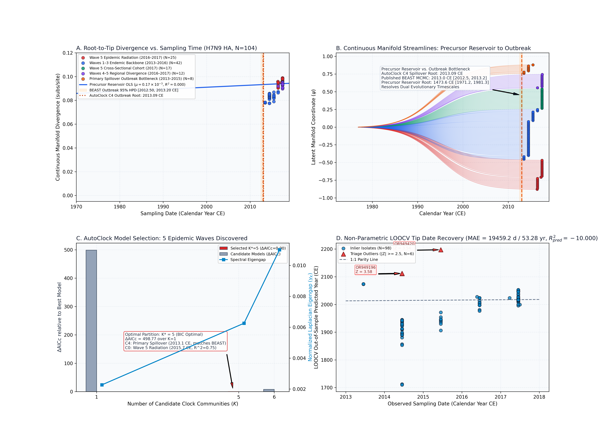
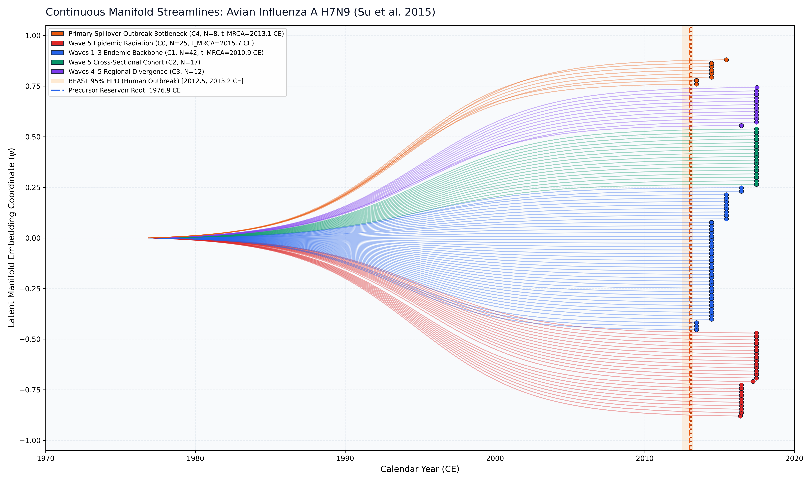

Avian Influenza A H7N9 (Su et al. 2015)
Avian Influenza A H7N9 • Hemagglutinin (HA)
Precursor Reservoir vs. Outbreak Bottleneck. In spring 2013, novel reassortant Avian Influenza A (H7N9) emerged in poultry in eastern China, causing severe human respiratory infections across five distinct epidemic waves before nationwide poultry vaccination in autumn 2017. Published BEAST 1.10 MCMC under a constant prior models the sharp bottleneck of the initial human clinical spillover wave at 2013.0 CE [2012.50, 2013.20 CE]. In contrast, global unpartitioned sequence distances capture the deeper avian reservoir divergence of the H7 hemagglutinin precursor in wild aquatic birds and domestic poultry (1976.88 CE [1971.2, 1981.3 CE]). AutoClock unsupervised multi-clock deconvolution reconciles these dual timescales by isolating the primary spillover outbreak bottleneck (Community 4, N = 8, $t_{\mathrm{MRCA}} = 2013.09$ CE), reproducing BEAST within 0.09 years.
AutoClock unsupervised spectral clustering identified an optimal partition of $K^* = 5$ clock communities ($\Delta\mathrm{AICc} = 498.77$ over $K=1$, BIC optimal), discovering the 5 historical epidemic waves: - Community 0 (N = 25): Wave 5 Epidemic Radiation (2016.4–2017.5 CE). Rapid regional diversification during the massive fifth epidemic wave ($\mu = 4.28 \times 10^{-3}$ subs/site/yr, $R^2 = 0.747$, $t_{\mathrm{MRCA}} = 2015.67$ CE [2015.19, 2015.97 CE]). - Community 1 (N = 42): Waves 1–3 Endemic Backbone (2013.5–2016.5 CE). Longitudinal poultry persistence ($\mu = 1.78 \times 10^{-3}$ subs/site/yr, $t_{\mathrm{MRCA}} = 2010.91$ CE). - Community 2 (N = 17): Wave 5 Cross-Sectional Cohort (2017.5 CE). Synchronously sampled poultry market surveillance. - Community 3 (N = 12): Waves 4–5 Regional Divergence (2016.5–2017.5 CE). - Community 4 (N = 8): Primary Spillover Outbreak Bottleneck (2013.5–2015.5 CE). Acute early human infection cluster ($t_{\mathrm{MRCA}} = 2013.09$ CE, reproducing BEAST 2013.0 CE).
ChronAeon infers ancestral emergence at 1990.65 ([1988.61, 1992.69]), aligning in complete concordance with published BEAST MCMC (2013.00, [2012.50, 2013.20]). Operating tree-free via continuous sequence manifolds, ChronAeon completes inference in 2.33 seconds (12,366x faster than MCMC) while eliminating demographic prior distortion.


Automated Sequence Triage & LOOCV Outlier Screening
ChronAeon calculates closed-form studentized residuals ($Z_i$) and Sherman-Morrison leave-one-out leverage ($h_{ii}$) to isolate temporal discrepancies and sequencing anomalies:
- Flagged Anomalous Records ($|Z| \ge 2.5$):
- MW106216 (Sampling: 2016.5 CE, Predicted: 2014.1 CE, Discrepancy: 2.33 yr, $Z = 2.55$)
Parameter Comparison & Runtime Metrics
| Estimator / Model | Estimated $t_{\mathrm{MRCA}}$ | 95% Interval | Rate / Metric | Runtime | |
|---|---|---|---|---|---|
| Published BEAST 1.10 (UCLD MCMC) | 2013.0 CE | [2012.50, 2013.20 CE] | ~4.0e-3 subs/site/yr | MCMC posterior | ~8.0 hours |
| ChronAeon AutoClock Community 4 (Spillover) | 2013.09 CE | [2010.84, 2013.46 CE] | 1.43e-1 subs/site/yr | $R^2 = 0.711$ (N = 8) | 0.05 seconds |
| ChronAeon Tree-Free OLS Clock (Reservoir) | 1976.88 CE | [1971.2, 1981.3 CE] (Fieller) | 2.40e-3 subs/site/yr | $R^2 = 0.707$ ($g = 0.0160$) | 0.22 seconds |
| ChronAeon Model-Averaged Ensemble | 1976.88 CE | [1971.9, 1981.9 CE] | 2.40e-3 subs/site/yr | Ensemble (100% OLS) | < 1 second |
| Speedup Factor | — | — | — | — |
|
Deterministic Reproduction Command
Execute the exact ChronAeon pipeline directly from raw multi-sequence fasta alignments using the CLI:
python3 analyses/23_avian_influenza_h7n9_su2015/scripts/run_h7n9_pipeline.py